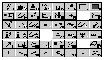

Section 5 - Editing Towns
Editing a town is very similar to editing an outdoor section. The basic mechanics are the same. There are simply more options.
Editing Buttons
There are 45 buttons for use while editing the towns (see the figure in the previous chapter for a diagram of button positions). Most of these buttons have the same effect as they do when editing outdoors. The buttons which work differently are described below.

12 - Set Area Description: Works like in outdoor sections, except that you now get 16 rectangles to edit.
13 - Place Wandering Monster Location: Towns, like outdoor sections, have 4 wandering monster arrival points, which can be chosen here. Make sure to choose places with open area around them, so that theres room for the monsters to appear.
15 - Set Town Entry: Not used when editing towns.
16 - Edit Item: Edit an item youve already placed. Press this button and then click on the item to edit. A dialog will come up.
To change the item, press the Choose button. If the item is gold, food, or has charges, you can use the text area to set the amount of gold or food, or the number of charges (leave at -1 for it to be ignored). If Always Here is selected, the item will always be there when the party enters the town, even if theyve grabbed it before. If Someones Property is selected and the party takes the item when a townsperson is watching, the town becomes hostile. Finally, if Contained is selected, the item is considered to be in a barrel, crate, dresser, etc.
The . key is a shortcut for this button.
17 - Duplicate Item: When this button is pressed and a spot of terrain is selected, an exact duplicate of the last item placed/edited is placed. The / key is a shortcut for this button.
18 - Erase Item: Use to erase all items in a space.
19 - Edit Monster: Press this and click on a monster to change its properties. For more information, read Placing and Editing Monsters, later in the chapter. The , key is a keyboard shortcut.
20 - Duplicate Monster: Press and click a terrain space to place an exact duplicate of the last placed/edited monster. The ` key is a keyboard shortcut.
21 - Erase Monster: Erase a placed monster.
22, 23, 24,25 - Set North Entry, Set West Entry, Set South Entry, Set East Entry - Use these to set the space the party starts in when they enter the town from the outdoors. When the party enters the town from due north or due south, they start at the north and south entry spaces. If they enter from the east, northeast, or southeast, the start at the east entry space. If they enter from the west, northwest, or southwest, the start at the west entry space.
26 - Place Web
27 - Place Crate
28 - Place Barrel
29 - Place Fire Barrier
30 - Place Force Barrier
31 - Place Quickfire: Places these objects/fields in the selected space. Each town can have at most 50 of these items or special effects (see below).
32 - Clear Space: Clear all fields, webs, barrels, crates, and special effects from a space.
33 - Place Small Blood Stain
34 - Place Medium Blood Stain
35 - Place Large Blood Stain
36 - Place Small Slime Pool
37 - Place Large Slime Pool
38 - Place Dust
39 - Place Bones
40 - Place Rubble: These are the eight special effects, things that have no game purpose but enhance the atmosphere of the level.
Town Menu
Town Details - These are described below.
Town Wandering Monsters - You can have four different groups of monsters appear in the town. Each group can have 4 different types of monsters. One monster of each of the first 3 types will appear, and 1-2 of the 4th type will appear.
Selecting this option brings up a dialog box, in which you can enter the sorts of monsters in each group. To choose the monsters in a group, press the Choose button below it. You will be asked to pick each of the 4 monsters.
Set Town Boundaries - Every town has a boundary. When the party reaches the boundary, they leave the town. This boundary is marked by a white rectangle, which always starts 4 spaces from the edge of the town.
In any town the party can walk out of, the boundary should stay 4 spaces from the edge of the dungeon. Otherwise, the party will be able to get closer to the edge of the town and look off the edge, which you probably dont want. However, if the town can only be left by a stairway (which is a special encounter), you might want to make the active area in the town larger, to give you more room for stuff.
To change the town boundary, select this option, click on the upper left corner of the town boundary, and then click on the lower right hand corner of the town boundary.
Frill Up Terrain, Remove Terrain Frills, Edit Area Descriptions - Works like the similar option in the Outdoor menu.
Add Random Items (Advanced) - This places the random items you set in Edit Item Placement Shortcuts in the town. See the chapter on scenarios for a description of this feature.
Set All Items Not Property - All items in the town that are marked as someone elses property become safe for the party to get.
Clear All Items - Erase all items in the town.
Edit Special Nodes, Edit Town Text (Advanced) - Takes you to the main screen, where you can directly edit the special nodes and the town text respectively.
Advanced Town Details (Advanced) - These are described below.
Set Town Event Times (Advanced) - You can have special nodes called at regular time intervals while the party is in the town. Select this option, and a dialog box will come up. Enter the time between calling the node in the left column, and the special node to call to the right. Press Create/Edit to create the special.
Dont make the interval between calling specials too low ... special encounters slow the game down.
Town Details, Advanced Town Details
There are two dialog boxes to edit the town details and advanced town details, which are accessed through the Town menu.
Town Details Window
This window can be used to edit the basic details about the town, which influence what it will be like to play through.
Town name - The name of the town.
Day When Town Dies, Event Which Prevents Town Death (Advanced) - After the given day, you can have the town be abandoned (i.e. empty of creatures). If the given day is left at -1, this doesnt happen.
You can also have an event which prevents the town from being emptied at the given day. To have an event prevent this, enter the events number (1 .. 9) in the second text area. For more on this, read the section on Time Passing in the Special Encounters Chapter.
Lighting - A town can be fully lit, dark, very dark (torches burn down faster), or totally dark (light sources go out immediately).
Maximum Number of Monsters - When the given number of monsters in the dungeon is killed, the dungeon is considered abandoned, and will be completely empty from now on. Note that this will remove friendly monsters as well.
Difficulty - This is a number from 0 to 10. The higher the number, the harder the town is, i.e. the faster wandering monsters appear and the more challenging locks and traps are.
Advanced Town Details Window
You can also edit more complicated features of the town in this window. All of these are advanced topics. For all of these fields, if the value is left at -1, it is ignored.
Exit Town Specials - When the party leaves town while heading in a certain direction, you can have a town special node called. Enter the number of the node to call. You can use the Edit Special Nodes option in the Town menu to create the special encounter.
Town Entry Special Node - You can also set town special nodes to be called when the town is entered while abandoned or not abandoned.
Exit Town Location - When the party leaves the town, you may want the party to end up in different areas in the current outdoor section. Enter the locations in the outdoor section for the party to arrive at when leaving town in that direction.
Town Hidden - You can have a town be invisible when the party enters the scenario, only to be made visible by a special encounter (for example, the Show/Hide Town node type). To do this, press this button.
Note that towns are only hidden when the party enters a scenario. If you add a town to a scenario and set it has hidden while a party is in the scenario, that party will still be able to see the town. If that party leaves the scenario and then reenters, the town will be properly hidden.
Placing Items
You can place preset items in towns for the party to find. To place an item, select one from the I1 - I5 menus, and click on the space to place it on. To edit a placed item, press the Edit Item button (in the lower right hand corner) and click on the item to edit.
When you select an item to edit, the Editing Preset Item window will come up. You can change which item is here by pressing the Choose button. If you want to set the amount of gold or food here or the number of charges the item has (it it's a wand, set of arrows, or other item with charges) enter the new amount in the Amount or Charges Text field. Finally, there are three options at the bottom of this window:
Always Here - Normally, when the party takes an item, it won't be there the next time they enter the town. If this option is selected, the item will be there every time they enter the town.
Someone's Property - If the party takes this item and a friendly person sees them do it, the town will become hostile.
Contained In Something - This item is contained inside a barrel, dresser, etc. and can't be taken until the party looks inside. When an item is placed onto a contained, this option is automatically selected for you. If you select this option and the item is not inside a container, the party won't be able to see or get it.
Placing And Editing Monsters
Placing and editing monsters works like editing items. Select a monster, from the M1 - M4 menus, and click on the spot for it to appear in. Each monster has a default attitude (friendly, hostile, etc.), which is set in the monster type editing screen. The monster has this attitude when it appears.
To edit a monster, press the Edit Monster button (in the lower right hand corner) and click on the monster. The monster dialog window has several options:
Creature Type - Press to select a new monster type.
Creature Starting Attitude - Select Friendly (wont attack), Friendly, Will Fight (wont fight party, and will fight bad monsters), Hostile, Type A (will attack the party, and monsters of type Hostile Type B), and Hostile, Type B (will attack the party, and monsters of type Hostile Type A).
Creature Can Move - If no, monster cant move.
Personality - If left at -1, the creature cant be talked to. Otherwise, see chapter on Dialogue.
Facial Graphic - Press Choose to select the picture the player sees when talking to this character. If this is left at -1 and the character can be talked to, the player will see the creatures graphic on the talking screen.
There are also more advanced settings for any placed creature. Press the Advanced button to set them.
Advanced Monster Settings Dialog
When is Creature Here (Advanced) - You are allowed to set a variety of settings which determine when this creature will appear in the town. These mainly depend on what day it is, and what special events have occurred. For a more detailed description of how time works, read the chapter on Passing Time.
Note that, if the town has been abandoned, creatures never appear.
There are two text editing areas after these buttons, where you will enter the days the creatures appear/disappear and the events theyre linked to. The first area will always get a day, and the second area will get the number of a special event (0 - 9, with 0 meaning no event).
Always Here - Always here, no matter what.
Appear on Given Day - Here after day in first text area, unless Event in second box has occurred (if 0 is put in second box, the creature is always there after given day).
Disappear on Given Day - Disappears day in first text area, unless Event in second box has occurred.
Sometimes Here A-C - Creature is present every third day. If Sometimes Here A is selected, creature is there on days 1, 4, 7, etc. If Sometimes Here B is select, creature is here on days 2,5,8, etc. If Sometimes Here B is select, creature is here on days 3,6,9, etc. This can be used for a character which travels from town to town.
Appear When Event - After event in second box has occurred, creature is here.
Disappear When Event - Once event in second box has occurred, creature disappears.
Special Encounter Group (Advanced) - You can specify that a creature in a town will not be there at first, but will be brought into being by a special encounter. You can have 10 different groups of these creatures, who will be brought into being by calling a special node of the type One-Time Place Town Encounter.
Special Node to Call When Killed (Advanced) - Give the number of a town special node to call when the creature is killed (or -1 for none).
Linked Stuff Done Flag (Advanced) - Give the two parts of a Stuff Done flag. If this flag is non-zero, the creature wont be here. If it is 0, the creature will be here, but, should the creature die, the flag will be set to 1.
This can be used for a monster you only want the party to be able to kill once.